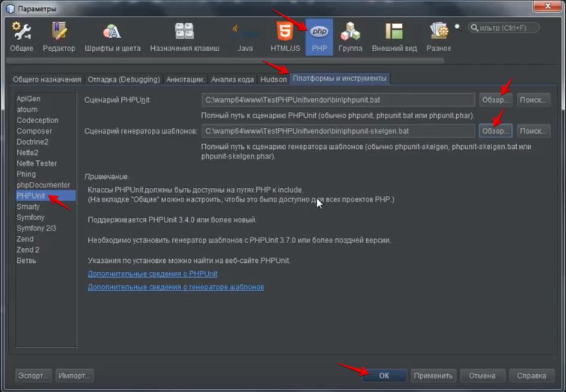
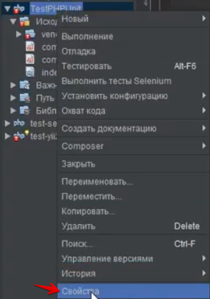
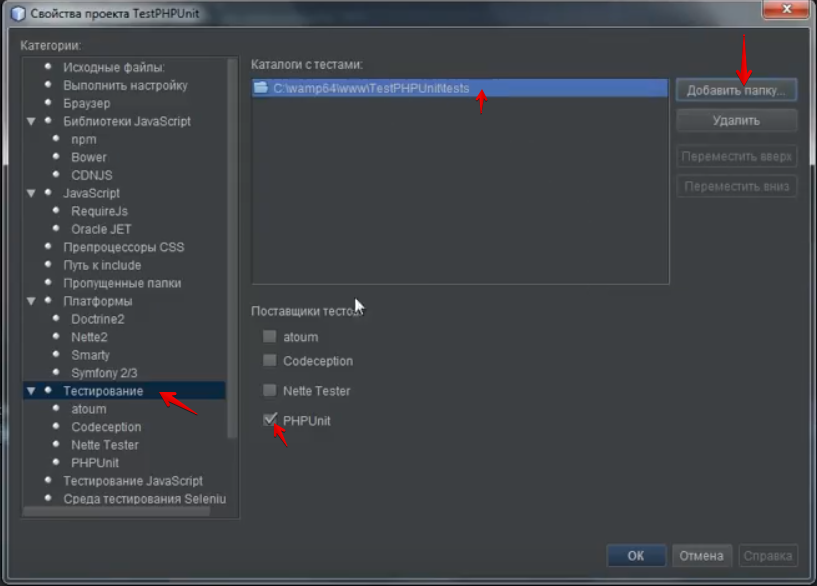
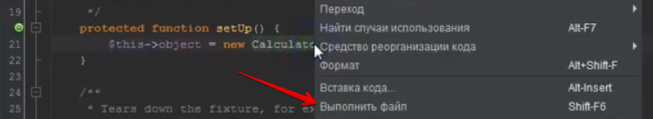
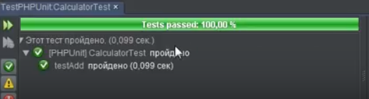

PHPUnit (NetBeans)
1. Скачайте и установите Composer https://getcomposer.org/download/
2. Установите сервер WAMP (или другой) http://www.wampserver.com/ru/
3. Создайте новый проект TestPHPUnit в среде разработки NetBeans.
Проект разместитена сервере по адресу: C:\wamp64\www\TestPHPUnit

4. Откройте окно консоли, перейдите в папку прокета TestPHPUnit и введите команду установки PHPUnit
composer require --dev phpunit/phpunit ^5
5. Необходимо установить PHPUnit Skeleton Generator https://github.com/sebastianbergmann/phpunit-skeleton-generator
Для этого откройте файл Composer.json который находится в корне проекта TestPHPUnit
И отредактируйте следующим образом
{
"require-dev": {
"phpunit/phpunit": "5",
"phpunit/phpunit-skeleton-generator": "*"
}
}
Откройте консоль и введите команду
composer update
После завершения устаровки в папке C:\wamp64\www\TestPHPUnit\vendor\bin
будут находиться исполняющие файлы: phpunit.bat и phpunit-skelgen.bat
6. Настройки параметров редактора NetBeans. Сервис -> Параметры
Переходим в раздел PHP -> вкладка "Платформы и иснтрументы" -> раздел PHPUnit

Прописываем адреса к файлам phpunit.bat и phpunit-skelgen.bat
7. Открываем свойства проекта

Переходим в раздел "Тестирвоание". Включаем флаг PHPUnit и добавляем адрес к папке с нашими тестами C:\wamp64\www\TestPHPUnit\Tests

8. Создаем файл Calculator.php

9. Создаем тестовый скрипт. Для этого выделите файл Calculator.php откройте контекстное меню -> Средства -> Создать/Обновить тест

Выберите местоположение и платформу PhpUnit. Нажмите ОК.

В результате автоматически будет создан скрипт тестирования.
10. Отредактируйте тестовый скрипт следующим образом
<?php
/**
* Generated by PHPUnit_SkeletonGenerator on 2018-02-09 at 09:38:06.
*/
require_once '..\Calculator.php';
class CalculatorTest extends PHPUnit_Framework_TestCase {
/**
* @var Calculator
*/
protected $object;
/**
* Sets up the fixture, for example, opens a network connection.
* This method is called before a test is executed.
*/
protected function setUp() {
$this->object = new Calculator();
}
/**
* Tears down the fixture, for example, closes a network connection.
* This method is called after a test is executed.
*/
protected function tearDown() {
}
/**
* @covers Calculator::add
* @todo Implement testAdd().
*/
public function testAdd() {
$actual = $this->object->add(2, 2);
$result = 4;
$this->assertEquals($result, $actual);
}
}
11. Запустите тест нажатием Shift+F6 или через контекстное меню

Тест пройден успешно

Created with the Personal Edition of HelpNDoc: Create HTML Help, DOC, PDF and print manuals from 1 single source